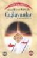
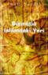

İE 7'de tam PNG desteği ile geliyor. Web kodlamacıları için büyük avantajlar sağlayan PNG formatını artık İE 7'de destekliyor . Gölgelerde ve transparan PNG'ler diğer resimlere göre büyük avantaj sağlar. http://www.positioniseverything.net/articles/dropshadows.html
devamını okuSaray Hatıralarım - Safiye Ünivar
Sultan Reşad zamanında sarayda muallimelik(öğretmenlik) yapmış olan Safiye Ünivar'ın sarayda yaşadıkları gördükleri ve dinlediklerini okuyoruz. Saray hayatına ışık tutan bir eser. Ayrıca Tarih'in bir kısmına da ışık tutuyor. Farklı yönde
devamını okuCss de kodumuzu İE6'dan gizleme
Bir kodu İE'den gizlemek istiyorsak
p{ color:red !important; /* bu kısmı ie6 görmeyecek*/ color:blue; }
sayfa için kullandığımız paragraflar ie6 mavi ff kırmızı görünecektir. !important css ile etkinlik için kullanılan bir etikettir. !important tanımlı özellik daha önce yapılmış aynı özelliğin üzerine çıkar. CSS ile etkinlik hakkında daha fazla bilgi ...
devamını okuFavorilerimdeki CSS linkleri
- BrainJar.com
- Dijital Web
- [Cascading Style Sheets CSS Tutorials - Javascript Styles Change Styles Hover Styles][]
- Cascading Style Sheets Forum
- [Cre8asite forums. CSS, Style, and Positioning. [ Search Engine Optimization, Usability and Web Design. ]
- CSS Garden
- CSS Vault
- [CSS-guide, Index pages Table of contents of the CSS-guide (the longer version)][]
- CssBeauty
- [CSS ...
Hayatımın Acı ve Tatlı Günleri (şadiye Sultan Binti Abdülhamid Han)
Tarihimizin en tartışmalı dönemlerinden biri olan II. Abdülmamid Han devrine farklı bir yönden bakmak için güzel bir kitap. Kitapdan güzel bir alıntı: "Diye bilrim ki, babam, İmparatorluğun inkirazını(çöküşünü) durduramamış fakat hiç olmazsa dümenini sahile kırmış ve bir kumsala oturtmaya muvaffak olmuştur. Enkazından da bilahere semereli bir şekilde faydalanılması mümkün ...
devamını okuİE 7 tam sürümü çıkmadı ama sorunları şimdiden başladı
IE 7 çıkmadan ortalığı kavurmaya başladı. Bir çok makale yazılmaya başladı. Bir sorun var İngilzice bu makaleler http://nanobox.chipx86.com/blog/ http://www.thinkvitamin.com/
devamını okuÇağlayanlar - Ahmet Hikmet Müftüoğlu
Çağlayanlar'da yer alan hikayeler tamamen vatani ve milli duygularla yazılmış nesirlerdir. Trablusgarp Savaşı dolayısıyla kaleme aldığı Padişahım Alınız Menekşelerimi, Veriniz Gülümü adlı hikayesi, Anadolu insanının mert ve heybetli yapısının dile getirildiği Üzümcü hikayesi, Göç destanından alınan bir konu etrafında oluşturulmuş Altın Ordu hikayesi gibi konusunu Türk destanlarından, Türk tarihinden ...
devamını okuGoogle Office Takımını hazırlıyor.
Google office programlarını tek tek sahaya sunuyor. Amaç Microsoft Office'i tahtından indirmek mi? Google Ofis programlarını piyasaya sunuyor. Birkaçını sayacak olursak: Google Calendar, Gmail, Writely(web Geliştirici), Veritabanı için Google Base olabilir , Google Page Creator(Web Dizayn) vd. Kaynak: http://blogs.zdnet.com/web2explorer/?cat=14
devamını okuSünnetin İslamdaki Yeri - İmam Suyuti
Sünnet üzerine bukadar yorumların yapıldığı günümüzde sünnete karşı olanlara verilmiş güzel bir cevap. Sünnet karşı çıkmak şimdiki bir olay değil eskiden beri gelen bir illettir. "Muhtemelen sizden biri koltuğuna kurulacak vebeni yalanlayacaktır. Ona benden bir hadis ulaşacak, oda "Resulullah(sav) bunu söylememiştir. Bırak bunu, bize Kur'an'dakilerden bahset" diyecektir ...
devamını okuÇanakkale Mahşeri - Mehmet Niyazi
![Çanakkale Mahşeri][]Bu kitabı eskiden okumştum bu gün Çanakkale Savaşın'da Krite Zaferinin yıldönümü olduğunu görünce bu kitabı eklemek istedim. Hayatımda okuduğum romanların en iyisi diyebilirim. Bunda Çanakkale Destanından bahsetmiş olmasını çok büyük etkisi var tabi. Sonra kitabın web sayfasında şu metni gördüm: > Churchill sonuçlarını şöyle özetliyor; 'Yenilmez armadamızın üçte ...
devamını oku